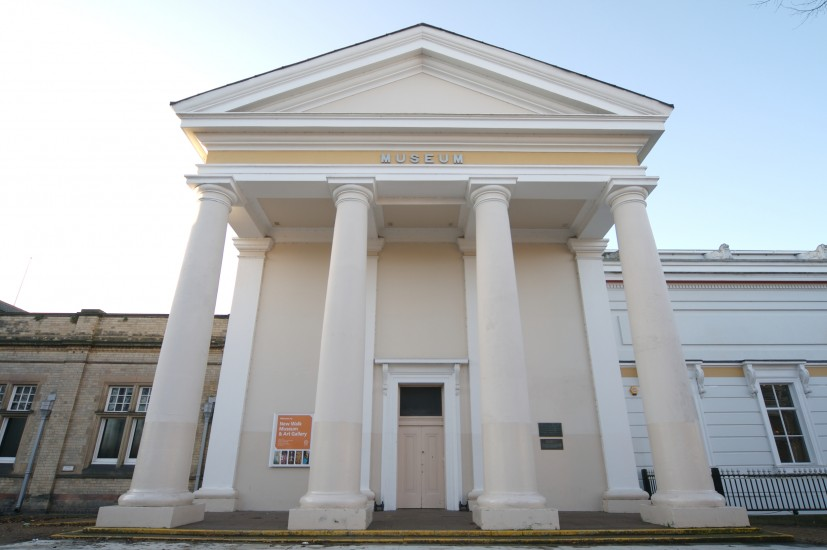
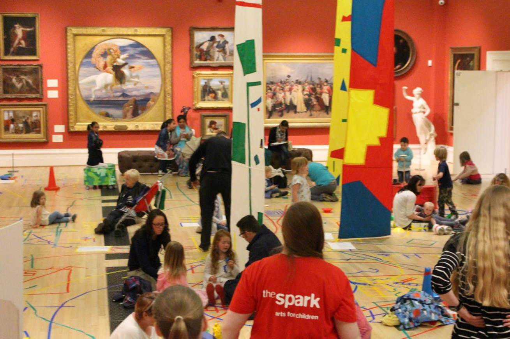
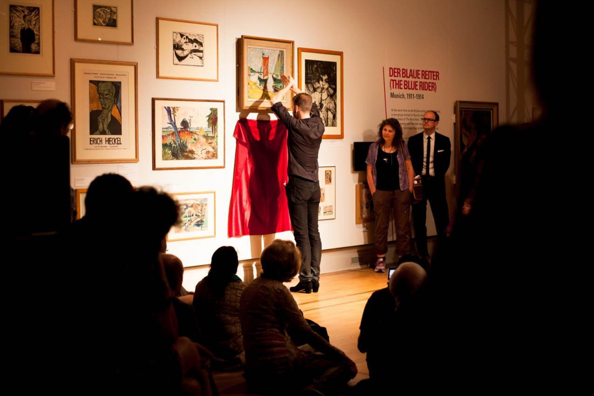

Leicester’s New Walk Museum and Art Gallery played host to the first Museum of the citizen event, organised in partnership between the British Museum and Leicester City Council. Museum of the citizen: Leicester tackled the theme of ‘Young Citizens’; areas of discussion included how museums can help young people to find a sense of place and identity, Leicester’s commitment to supporting young people, creating a prosperous and vibrant place to live and work, and how working in partnership with the British Museum helps to achieve these aims.

On the panel was:
- Sarah Levitt, Head of Arts and Museums, Leicester City Council
- Liz Blyth, Leicester’s Director for Culture and Neighbourhood Services
- Joanna Mackle, Deputy Director, British MuseumSusan Raikes, Head of Learning, Audiences and Volunteers, British Museum
- Susan Raikes, Head of Learning and National Partnerships, British Museum
- Bonnie Greer OBE, writer, broadcaster and former British Museum Trustee
- Tim Loughton MP, Chair of the All Party Parliamentary Group for the British Museum
‘Both the British Museum and Leicester Museums are fundamental symbols of what it means to be a citizen in the modern world, with a right to information and access to heritage through our collections.’
– Sarah Levitt
Sarah Levitt, Head of Arts and Museums at Leicester City Council, opened discussions with an overview of the close partnership between Leicester Museums and the British Museum, highlighting key exhibitions, spotlight displays, community projects and training opportunities that have been developed in collaboration over ten years.
Listen to Sarah Levitt:

‘Leicester is a very special place with an incredible range of modern communities. Arts, culture and heritage are at the heart of what we do in the city. They play such an important part in our day to day lives’
– Liz Blythe
In her panel talk, Liz Blythe, Leicester’s Director for Culture and Neighbourhood Services, noted that the number of children being born in Leicester is growing, as are the numbers of young people moving to the city to work and study. Through that process Leicester has emerged as one of the youngest populations in the country, whose young citizens are crucial to the city’s future. As such many of the services of Leicester Museums rightly focus on young people.
Listen to Liz Blythe:
‘Objects have huge power to inspire and it’s important that museums create opportunities for young people to develop a connection with museum collections.’
– Joanna Mackle
British Museum Deputy Director Joanna Mackle touched on the timeliness and importance of ‘a national discussion on partnerships’, referencing the recently published Warwick Report and the first Government White Paper on culture in 50 years, soon to be released.
The British Museum’s partnership with Leicester has focused on object loans and spotlight displays, and Joanna Mackle highlighted the 17th-century Mughal jade terrapin, The Throne of Weapons (an artwork made from decommissioned guns in Mozambique), and the Sikh fortress turban as successful loans. In 2016, the partnership will continue with a joint HLF-funded project called Object Journeys, connecting local young people with collections at the British Museum and New Walk Museum.
Listen to Joanna Mackle:
‘Young people are 20% of the population but they are 100% of the future.’
– Tim Loughton
Culture, heritage and archaeology are uniquely placed but ‘underestimated’ ways of bringing communities together, old and young, noted Tim Loughton MP, Chair of the British Museum’s All Party Parliamentary Group in his talk. Loughton emphasised the importance of getting young people into museums early, to get them enthused and engaged with local and global histories from a young age.
Listen to Tim Loughton:

‘We need young people who come from outside the Museum to join boards like this, because they are the disruptors; they ask the questions. It’s extremely important. Otherwise, we become tombs of the past which have no relevance to the way we live now.’
– Bonnie Greer
Writer, broadcaster and former British Museum Trustee Bonnie Greer, said that as a child the museum and museum collections were sites for the questioning and interrogation of the world’s knowledge, something she wishes for young people today. Greer stated that museums should be disruptors, in the sense that collections should be constantly interrogated and challenged, by academics, teachers and above all by young people.
Listen to Bonnie Greer:

‘Museums shouldn’t be telling young people about things, it should be teaching them and helping them to ask questions. We should be learning from those questions too’
– Susan Raikes
Echoing Greer’s sentiments, Susan Raikes, the British Museum’s Head of Learning and National Partnerships, noted the importance of empowering young people to ask questions, make decisions and pursue their ambitions within museums. She noted the Museum’s continued commitment to creating spaces of autonomy for young people, at the British Museum and in partnership across the UK.
Listen to Susan Raikes:
Questions from the floor:
‘We live in a society where we are all told that society is getting older, but youth culture is very much evident. How do we get museums to engage with youth culture?’
– Stuart Bailey
Questions for the panel included how museums can engage with youth culture, how they can become safe spaces for young people, and whether museums should be more active in the digital spaces where young people ‘live’ online.
Listen to the Q&A:
Museum of the citizen is a new events programme and public discussion that aims to celebrate our work with partners, large and small, who help us reach the broadest possible audience.